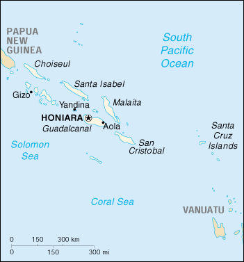

|
Solomon Islands | |
| Introduction Geography People Government Economy Communications Transportation Military Transnational Issues | ||
|  | ||
| Solomon Islands | Introduction | Top of Page |
| Background: | The UK established a protectorate over the Solomon Islands in the 1890s. Some of the bitterest fighting of World War II occurred on these islands. Self-government was achieved in 1976 and independence two years later. Current issues include government deficits, deforestation, and malaria control. |
| Solomon Islands | Geography | Top of Page |
| Location: | Oceania, group of islands in the South Pacific Ocean, east of Papua New Guinea |
| Geographic coordinates: | 8 00 S, 159 00 E |
| Map references: | Oceania |
| Area: |
total:
28,450 sq km
land: 27,540 sq km water: 910 sq km |
| Area - comparative: | slightly smaller than Maryland |
| Land boundaries: | 0 km |
| Coastline: | 5,313 km |
| Maritime claims: |
measured from claimed archipelagic baselines
continental shelf: 200 NM exclusive economic zone: 200 NM territorial sea: 12 NM |
| Climate: | tropical monsoon; few extremes of temperature and weather |
| Terrain: | mostly rugged mountains with some low coral atolls |
| Elevation extremes: |
lowest point:
Pacific Ocean 0 m
highest point: Mount Makarakomburu 2,447 m |
| Natural resources: | fish, forests, gold, bauxite, phosphates, lead, zinc, nickel |
| Land use: |
arable land:
1%
permanent crops: 1% permanent pastures: 1% forests and woodland: 88% other: 9% (1993 est.) |
| Irrigated land: | NA sq km |
| Natural hazards: | typhoons, but they are rarely destructive; geologically active region with frequent earth tremors; volcanic activity |
| Environment - current issues: | deforestation; soil erosion; much of the surrounding coral reefs are dead or dying |
| Environment - international agreements: |
party to:
Biodiversity, Climate Change, Desertification, Environmental Modification, Law of the Sea, Marine Dumping, Marine Life Conservation, Ozone Layer Protection, Whaling
signed, but not ratified: Climate Change-Kyoto Protocol |
| Solomon Islands | People | Top of Page |
| Population: | 480,442 (July 2001 est.) |
| Age structure: |
0-14 years:
43.79% (male 107,229; female 103,162)
15-64 years: 53.15% (male 129,315; female 126,021) 65 years and over: 3.06% (male 7,190; female 7,525) (2001 est.) |
| Population growth rate: | 2.98% (2001 est.) |
| Birth rate: | 34.05 births/1,000 population (2001 est.) |
| Death rate: | 4.27 deaths/1,000 population (2001 est.) |
| Net migration rate: | 0 migrant(s)/1,000 population (2001 est.) |
| Sex ratio: |
at birth:
1.05 male(s)/female
under 15 years: 1.04 male(s)/female 15-64 years: 1.03 male(s)/female 65 years and over: 0.96 male(s)/female total population: 1.03 male(s)/female (2001 est.) |
| Infant mortality rate: | 24.47 deaths/1,000 live births (2001 est.) |
| Life expectancy at birth: |
total population:
71.55 years
male: 69.12 years female: 74.1 years (2001 est.) |
| Total fertility rate: | 4.65 children born/woman (2001 est.) |
| HIV/AIDS - adult prevalence rate: | NA% |
| HIV/AIDS - people living with HIV/AIDS: | NA |
| HIV/AIDS - deaths: | NA |
| Nationality: |
noun:
Solomon Islander(s)
adjective: Solomon Islander |
| Ethnic groups: | Melanesian 93%, Polynesian 4%, Micronesian 1.5%, European 0.8%, Chinese 0.3%, other 0.4% |
| Religions: | Anglican 34%, Roman Catholic 19%, Baptist 17%, United (Methodist/Presbyterian) 11%, Seventh-Day Adventist 10%, other Protestant 5%, indigenous beliefs 4% |
| Languages: |
Melanesian pidgin in much of the country is lingua franca, English spoken by 1%-2% of population
note: 120 indigenous languages |
| Literacy: |
definition:
NA
total population: NA% male: NA% female: NA% |
| Solomon Islands | Government | Top of Page |
| Country name: |
conventional long form:
none
conventional short form: Solomon Islands former: British Solomon Islands |
| Government type: | parliamentary democracy |
| Capital: | Honiara |
| Administrative divisions: | 7 provinces and 1 town*; Central, Guadalcanal, Honiara*, Isabel, Makira, Malaita, Temotu, Western; note - there may be two new provinces of Choiseul (Lauru) and Rennell/Bellona and the administrative unit of Honiara may have been abolished |
| Independence: | 7 July 1978 (from UK) |
| National holiday: | Independence Day, 7 July (1978) |
| Constitution: | 7 July 1978 |
| Legal system: | English common law |
| Suffrage: | 21 years of age; universal |
| Executive branch: |
chief of state:
Queen ELIZABETH II (since 6 February 1952), represented by Governor General Father John LAPLI (since NA 1999)
head of government: Prime Minister Mannaseh Damukana SOGAVARE (since 1 July 2000); Assistant Prime Minister Nathaniel WAENA (since 1 July 2000); Deputy Prime Minister Allan KEMAKEZA (since 1 July 2000); note - Prime Minister Bartholomew ULUFA'ALU was forced to resign his position in June 2000 following the armed takeover of the capital by elements supporting the opposition parties; Mannaseh Damukana SOGAVARE, who had been opposition leader, was then elected prime minister at a sitting of National Parliament on 30 June 2000 cabinet: Cabinet appointed by the governor general on the advice of the prime minister from among the members of Parliament elections: none; the monarch is hereditary; governor general appointed by the monarch on the advice of Parliament for up to five years; following legislative elections, the leader of the majority party or the leader of a majority coalition is usually elected prime minister by Parliament; deputy prime minister appointed by the governor general on the advice of the prime minister from among the members of Parliament |
| Legislative branch: |
unicameral National Parliament (50 seats; members elected from single member constituencies by popular vote to serve four-year terms)
elections: last held 6 August 1997 (next to be held by August 2001) election results: percent of vote by party - NA%; seats by party - GNUR 21, PAP 7, NAPSI 5, SILP 4, UP 4, independents 6, other 3 |
| Judicial branch: | Court of Appeal |
| Political parties and leaders: | there are two main coalitions - Coalition for National Unity, Reconciliation, and Peace or CNURP and Alliance for Change; the CNURP took power on 30 June 2000, it comprises members of the Liberal Party, People's Alliance Party, and the United Party, as well as a number of independents; the Alliance for Change, represents the former government and now is the opposition; in general, Solomon Islands politics is characterized by fluid coalitions; Group for National Unity and Reconciliation or GNUR [leader NA]; Liberal Party [Bartholomew ULUFA'ALU]; National Action Party of Solomon Islands or NAPSI [Francis SAEMALA]; People's Alliance Party or PAP [George LEPPING]; People's Progressive Party [Mannaseh Damukana SOGAVARE]; Solomon Islands Labor Party or SILP [Joses TUHANUKU]; United Party or UP [leader NA] |
| Political pressure groups and leaders: | NA |
| International organization participation: | ACP, AsDB, C, ESCAP, FAO, G-77, IBRD, ICAO, ICRM, IDA, IFAD, IFC, IFRCS, ILO, IMF, IMO, Intelsat (nonsignatory user), IOC, ITU, Sparteca, SPC, SPF, UN, UNCTAD, UNESCO, UPU, WFTU, WHO, WMO, WTrO |
| Diplomatic representation in the US: |
chief of mission:
Ambassador (vacant); Charge d'Affaires ad interim Jeremiah MANELE
chancery: 800 Second Avenue, Suite 400L, New York, NY 10017 telephone: [1] (212) 599-6192, 6193 FAX: [1] (212) 661-8925 |
| Diplomatic representation from the US: | the US does not have an embassy in Solomon Islands (embassy closed July 1993); the ambassador to Papua New Guinea is accredited to the Solomon Islands |
| Flag description: | divided diagonally by a thin yellow stripe from the lower hoist-side corner; the upper triangle (hoist side) is blue with five white five-pointed stars arranged in an X pattern; the lower triangle is green |
| Solomon Islands | Economy | Top of Page |
| Economy - overview: | The bulk of the population depends on agriculture, fishing, and forestry for at least part of their livelihood. Most manufactured goods and petroleum products must be imported. The islands are rich in undeveloped mineral resources such as lead, zinc, nickel, and gold. However, severe ethnic violence, the closing of key business enterprises, and an empty government treasury have led to a continuing economic downslide. Deliveries of crucial fuel supplies (including those for electrical generation) by tankers have become sporadic due to the government's inability to pay and attacks against ships. Telecommunications are threatened by the lack of technical and maintenance staff many of whom have left the country. |
| GDP: | purchasing power parity - $900 million (2000 est.) |
| GDP - real growth rate: | 1% (2000 est.) |
| GDP - per capita: | purchasing power parity - $2,000 (2000 est.) |
| GDP - composition by sector: |
agriculture:
50%
industry: 3.5% services: 46.5% (1995) |
| Population below poverty line: | NA% |
| Household income or consumption by percentage share: |
lowest 10%:
NA%
highest 10%: NA% |
| Inflation rate (consumer prices): | 10% (1999 est.) |
| Labor force: | 26,842 |
| Labor force - by occupation: | agriculture NA%, industry NA%, services NA% |
| Unemployment rate: | NA% |
| Budget: |
revenues:
$147 million
expenditures: $168 million, including capital expenditures of $NA (1997 est.) |
| Industries: | fish (tuna), mining, timber |
| Industrial production growth rate: | NA% |
| Electricity - production: | 30 million kWh (1999) |
| Electricity - production by source: |
fossil fuel:
100%
hydro: 0% nuclear: 0% other: 0% (1999) |
| Electricity - consumption: | 27.9 million kWh (1999) |
| Electricity - exports: | 0 kWh (1999) |
| Electricity - imports: | 0 kWh (1999) |
| Agriculture - products: | cocoa, beans, coconuts, palm kernels, rice, potatoes, vegetables, fruit; cattle, pigs; timber; fish |
| Exports: | $165 million (f.o.b., 1999 est.) |
| Exports - commodities: | timber, fish, palm oil, cocoa, copra |
| Exports - partners: | Japan 35.5%, other Asian countries 47.3% (1999) |
| Imports: | $152 million (f.o.b., 1999 est.) |
| Imports - commodities: | plant and equipment, manufactured goods, food and live animals, fuels, chemicals |
| Imports - partners: | Australia 38.5%, Singapore 15%, Japan 10.6%, NZ 6.2% (1999) |
| Debt - external: | $152.4 million (1998) |
| Economic aid - recipient: | $47 million (1999 est.), mainly from Japan, Australia, China, and NZ |
| Currency: | Solomon Islands dollar (SBD) |
| Currency code: | SBD |
| Exchange rates: | Solomon Islands dollars per US dollar - 5.0968 (November 2000), 5.0864 (2000), 4.8381 (1999), 4.8156 (1998), 3.7169 (1997), 3.5664 (1996) |
| Fiscal year: | calendar year |
| Solomon Islands | Communications | Top of Page |
| Telephones - main lines in use: | 8,000 (1997) |
| Telephones - mobile cellular: | 658 (1997) |
| Telephone system: |
general assessment:
NA
domestic: NA international: satellite earth station - 1 Intelsat (Pacific Ocean) |
| Radio broadcast stations: | AM 3, FM 0, shortwave 0 (1998) |
| Radios: | 57,000 (1997) |
| Television broadcast stations: | 0 (1997) |
| Televisions: | 3,000 (1997) |
| Internet country code: | .sb |
| Internet Service Providers (ISPs): | 1 (2000) |
| Internet users: | 3,000 (2000) |
| Solomon Islands | Transportation | Top of Page |
| Railways: | 0 km |
| Highways: |
total:
1,360 km
paved: 34 km unpaved: 1,326 km (includes about 800 km of private plantation roads) (1996 est.) |
| Waterways: | none |
| Ports and harbors: | Aola Bay, Honiara, Lofung, Noro, Viru Harbor, Yandina |
| Merchant marine: | none (2000 est.) |
| Airports: | 31 (2000 est.) |
| Airports - with paved runways: |
total:
2
1,524 to 2,437 m: 1 914 to 1,523 m: 1 (2000 est.) |
| Airports - with unpaved runways: |
total:
29
1,524 to 2,437 m: 1 914 to 1,523 m: 10 under 914 m: 18 (2000 est.) |
| Solomon Islands | Military | Top of Page |
| Military branches: | no regular military forces; Solomon Islands National Reconnaissance and Surveillance Force; Royal Solomon Islands Police (RSIP) |
| Military expenditures - dollar figure: | $NA |
| Military expenditures - percent of GDP: | NA% |
| Solomon Islands | Transnational Issues | Top of Page |
| Disputes - international: | none |
{kind=link}
{kind=link}